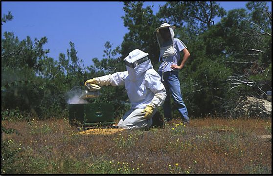

Οι ανθρώπινες δραστηριότητες είναι ήπιες στην περιοχή. Η κύρια δραστηριότητα είναι η κτηνοτροφία και η διαχείριση των δρυοδασών που φύονται σε ήπιες κλίσεις (Κίρκη). Οι επιπτώσεις αυτών των δραστηριοτήτων πάνω στα οικοσυστήματα είναι μικρή. Ένα σημαντικό τμήμα του πληθυσμού, ασχολείται με τον πρωτογενή τομέα. Οι κύριες ασχολίες είναι οι δασικές εργασίες και η κτηνοτροφία, ενώ συμπληρωματικά οι κάτοικοι ασχολούνται και με τη γεωργία.
Οι καλλιεργούμενες εκτάσεις είναι λίγες και όλες σχεδόν μη αρδευόμενες. Το μεγαλύτερο ποσοστό των καλλιεργειών βρίσκεται περιφερειακά της περιοχής και οι υπόλοιπες μέσα στις κοιλάδες. Η κύρια καλλιέργεια είναι του σταριού και του ηλίανθου. Ο όγκος των χρησιμοποιούμενων φυτοφαρμάκων δεν είναι γνωστός, αλλά οπωσδήποτε, λόγω της φύσεως των καλλιεργειών, πρέπει να είναι μικρός.
Η κτηνοτροφία για πολλούς κατοίκους της περιοχής είναι μια βασική απασχόληση. Τα ζώα εκτρέφονται νομαδικά και είναι σχεδόν αποκλειστικά αιγοπρόβατα.
Η δασική εκμετάλευση είναι μία βασική δραστηριότητα των κατοίκων, ιδιαίτερα στην περιοχή της Κίρκης, όπου εμφανίζονται ώριμα δρυοδάση σε ομαλές κλίσεις. Αντίθετα πολλές από τις δασικές εκτάσεις στην περιοχή Άβαντα δεν διαχειρίζονται, εξαιτίας των πολύ απότομων κλίσεων των πλαγιών
Μέσα στην περιοχή δεν υπάρχουν σημαντικές μονάδες δευτερογενή τομέα, εκτός από τα μεταλλεία της Κίρκης, τα οποία όμως τώρα έχουν σταματήσει να λειτουργούν. Μία βιομηχανική ζώνη της ευρύτερης περιοχής Αλεξανδρούπολης, κατασκευάζεται στην περιφέρεια του Άβαντα. Οι εγκαταστάσεις αυτές δεν είναι κοντά στις σημαντικά οικολογικές περιοχές, αλλά χρειάζεται αυστηρή χωροθέτηση των δραστηριοτήτων των υπό δημιουργία βιομηχανικών μονάδων. Ο τριτογενής τομέας δεν είναι αναπτυγμένος στην περιοχή, παρότι οι δυνατότητες προσέλκυσης επισκεπτών είναι μεγάλες, τόσο λόγω των ιδιαίτερα εντυπωσιακών φυσικών σχηματισμών, όσο και της γειτνίασης της με την Αλεξανδρούπολη.
